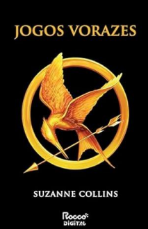

Alice No País Das Maravilhas | Lewis Garroll
Uma menina, um coelho e uma história capazes de fazer qualquer um de nós voltar a sonhar. Alice é despertada de um leve sono ao pé de uma árvore por um coelho peculiar. Uma criatura alva e falante com roupas engraçadas, que consulta seu relógio e reclama do próprio atraso. Curiosa como toda criança, Alice segue o animal até cair em um buraco sem fim que mudou para sempre a literatura infantil. Mais de 150 anos depois, Alice no País das Maravilhas continua repleto de ensinamentos para aqueles que ousaram seguir o Coelho Branco até sua toca. Um clássico literário, uma obra que sobrevive à passagem do tempo, e que enriquece suas possibilidades de leitura. Alice no País das Maravilhas é uma leitura que encanta crianças com sua trama, arrebata entusiastas da linguagem com seus jogos de palavras, chama a atenção dos fãs do psicodélico por seus personagens, entre tantos outros interesses que as aventuras da pequena Alice atraem. |
 |
Jogos Vorazes | Suzanne Collins
|
Na abertura dos Jogos Vorazes, a organização não recolhe os corpos dos combatentes caídos e dá tiros de canhão até o final. Cada tiro, um morto. Onze tiros no primeiro dia. Treze jovens restaram, entre eles, Katniss. Para quem os tiros de canhão serão no dia seguinte?...Após o fim da América do Norte, uma nova nação chamada Panem surge. Formada por doze distritos, é comandada com mão de ferro pela Capital. Uma das formas com que demonstra seu poder sobre o resto do carente país é com Jogos Vorazes, uma competição anual transmitida ao vivo pela televisão, em que um garoto e uma garota de doze a dezoito anos de cada distrito são selecionados e obrigados a lutar até a morte!Para evitar que sua irmã seja a mais nova vítima do programa, Katniss se oferece para participar em seu lugar. Vinda do empobrecido Distrito 12, ela sabe como sobreviver em um ambiente hostil. Peeta, um garoto que ajudou sua família no passado, também foi selecionado. Caso vença, terá fama e fortuna. Se perder, morre. Mas para ganhar a competição, será preciso muito mais do que habilidade. Até onde Katniss estará disposta a ir para ser vitoriosa nos Jogos Vorazes? |
 |